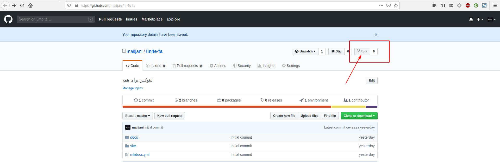
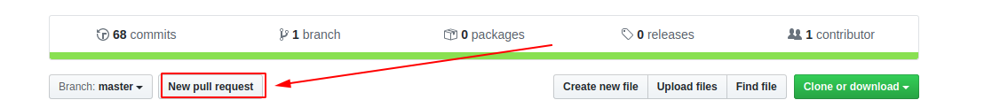
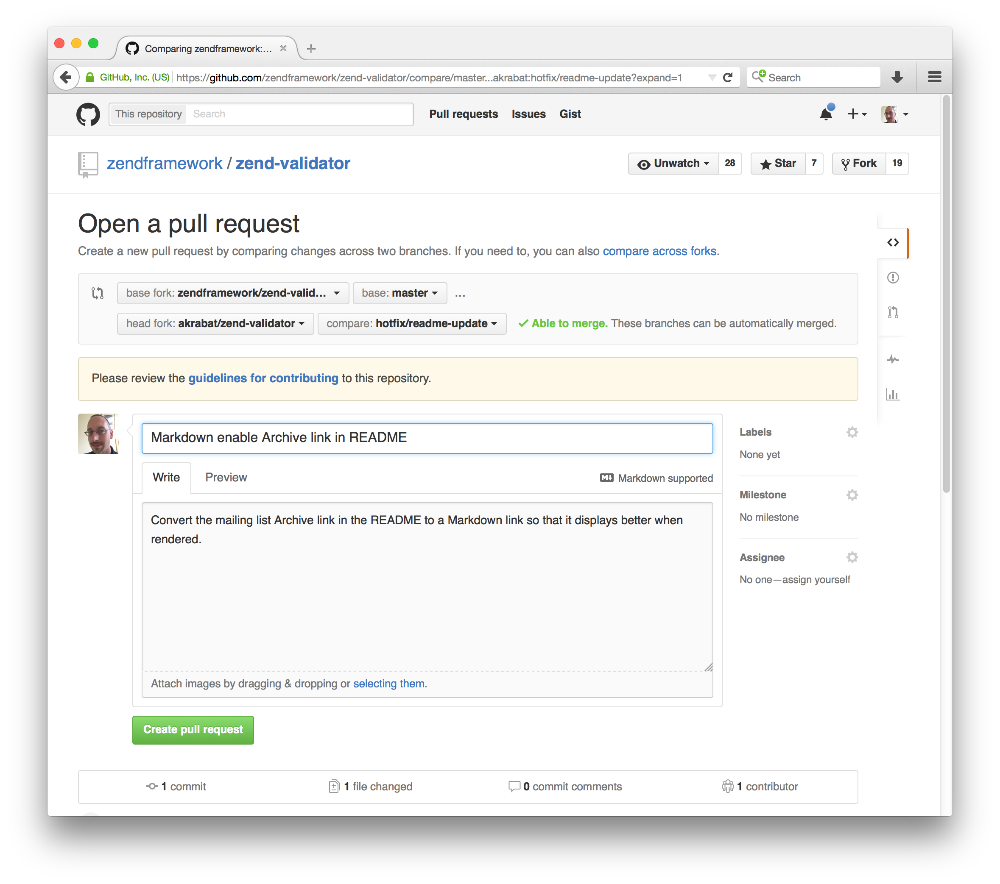

مشارکت در نوشتن کتاب
به راحتی و روش های مختلف میتونید کمک کنید!:
کمک مالی
کمک عملی
-
توی github.com یه حساب کاربری بسازید.
-
وارد آدرس github.com/malijani/linux-essentials بشید و روی دکمه Fork بفشارید : 
-
ابزار git و python3 و pip و virtualenv رو نصب کنید(برای پلتفورم های مختلف این ابزار ها ارائه داده شدند. متناسب با سیستم عامل خودتون عمل نصب رو انجام بدید!)
pip install virtualenv- دستور زیر رو اجرا کنید(به جای YOUR_USERNAME نام کاربری گیتهاب خودتون رو بذارید):
git clone https://github.com/YOUR_USERNAME/lin4e-fa- به lin4e-fa تغییر مسیر بدید و محیط مجازی توسعه پایتون رو بسازید(راهنمای virtualenv) :
cd lin4e-favirtualenv -p python3 .venv- محیط مجازی رو فعال کنید :
Windows :
Linux:
.venv\Scripts\activateLinux:
source ./.venv/bin/activate
- ابزار های مورد نیاز پروژه رو در حالی که محیط مجازی پایتون فعال هست رو به کمک pip نصب کنید:
pip install -r requirements.txt- حالا که محیط توسعه آمادست؛ فقط کافیه تم استفاده شده برای پروژه رو برای راست چین کانفیگ کنید:
file path : .venv/lib/python3.6/site-packages/material/mkdocs_theme.yml
فایل بالا رو با یک ویرایشگر متن باز کنید و متغیر های زیر رو مقدار دهی کنید :
language: fadirection: rtl
- برای تغییراتی که قصد اعمال اونها رو دارید یه شاخه جدید توی مخزن بسازید و توی اون کار کنید که با شاخه اصلی قاطی نشه:
git checkout -b USERNAME-changes- سرور داخلی mkdocs رو برای توسعه و ویرایش راه اندازی کنید :
mkdocs serve-
حالا کافیه محتویات درون مسیر docs رو با markdown ویرایش کنید و تغییرات رو به صورت زنده در مسیر localhost:8000 مشاهده کنید.
-
پس از انجام تغییرات دلخواهتون کافیه به کمک git اونا رو ذخیره کنید و به مخزن روی سرور گیتهابتون که از مخزن اصلی فرستاده شده بفرستید:
git add .git commit -m "Changed FILE Fixed ISSUE"git push -u origin USERNAME-changes- وارد حساب کاربری گیتهاب و مخزن فورک شده lin4e-fa بشید ؛ حالا روی دکمه New pull request بزنید ، موضوع تغییرات رو تعیین کنید و برای اون ها توضیحاتی بیارید و دکمه Create pull request رو بزنید تا ایجاد بشه:  (مثالی برای انتخاب موضوع و توضیحات): 